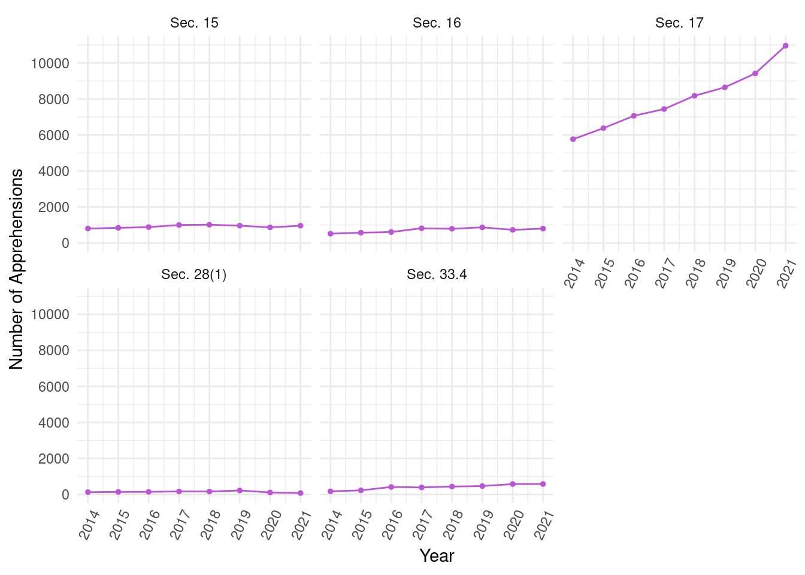
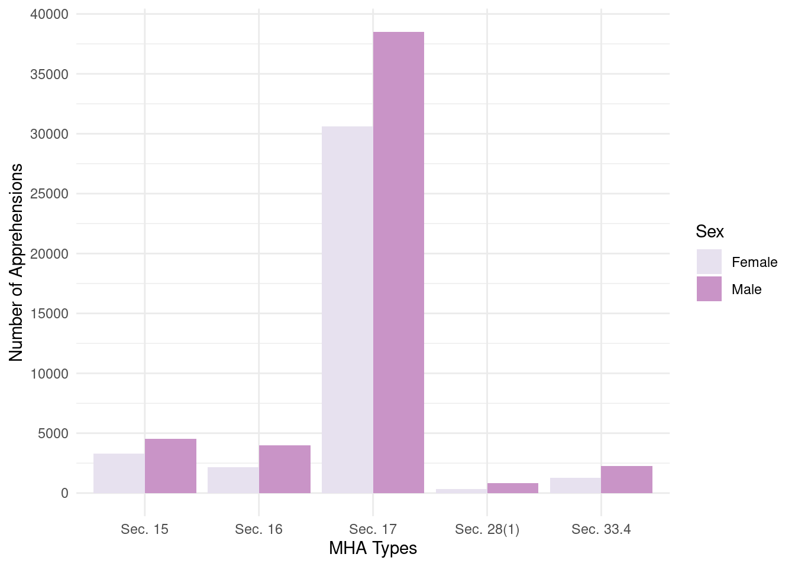
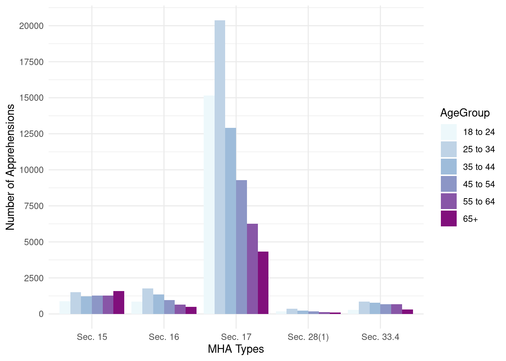

| MHA Apprehension Types | 2014 | 2015 | 2016 | 2017 | 2018 | 2019 | 2020 | 2021 |
|---|---|---|---|---|---|---|---|---|
| Mha Sec 15 (Form 1) | 806 | 843 | 884 | 1001 | 1017 | 965 | 870 | 962 |
| Mha Sec 16 (Form 2) | 520 | 574 | 614 | 819 | 792 | 870 | 733 | 801 |
| Mha Sec 17 (Power Of App) | 5764 | 6379 | 7064 | 7440 | 8177 | 8645 | 9418 | 10955 |
| Mha Sec 28(1) (Form 9 Elopee) | 128 | 140 | 144 | 167 | 163 | 221 | 110 | 79 |
| Mha Sec 33.4 (Form 47 Cto) | 175 | 228 | 415 | 390 | 439 | 467 | 576 | 578 |
| Total | 7393 | 8164 | 9121 | 9817 | 10588 | 11168 | 11707 | 13375 |
Under the Mental Health Act, Police Apprehensions Have Soared
Analyzing Mental Health Apprehensions in Toronto from 2014 to 2021
Abstract
This report discusses mental health apprehensions in Toronto using data from Open Data Toronto published by Toronto Police Services. The data shows an increase in apprehensions since 2014 with a steep incline from 2020 to 2021 within the context of COVID-19 and an inflated police budget
1. Introduction
The uptick in crime and mental health disturbances across the City of Toronto has dramatically climbed in recent years. Mental health apprehensions have increased considerably since the beginning of the COVID-19 pandemic. Apprehensions are classified under the Ontario Mental Health Act (MHA), which sets out the powers and obligations of psychiatric facilities and outlines the powers of police officers to make orders for individuals to undergo psychiatric evaluation (Mental Health Act, r.s.o. 1990, c. M.7 2015). The data shows that police are responsible for the majority of mental health apprehensions in Toronto. However, police are not trained in crisis care and have caused numerous deaths in attempts to de-escalate (Nasser 2020). Despite this, the city has increased the Toronto Police Service (TPS) budget while mental health services have faced disruptions.
Women and young adults have been disproportionately impacted by the pandemic and this is reflected in the rise of apprehensions in those groups. This paper will define the apprehension types under the MHA, discuss the number of mental health apprehensions in Toronto from 2014 to 2021, evaluate the role of police in context, and finally consider additional factors such as Sex and Age Group.
2. Data
This paper analyzed data obtained from the Open Data Toronto portal (Gelfand 2022) and was produced using the R statistical programming language (R Core Team 2022). here was used to reference file locations (Müller 2020). The data was examined and cleaned using the packages janitor (Firke 2021), dplyr (Wickham et al. 2023), and tidyverse (Wickham et al. 2019). Tables were made knitr (Xie 2023) and formatted with kableExtra (Zhu 2021). ggplot2 (Wickham 2016) was used to plot and scale the graphs.
The selected data source presents statistical limitations. Each apprehension case was registered under a unique identification number. Therefore, individuals apprehended multiple times would be counted as separate cases. Additionally, the dataset does not include racial demographics, which limits the social discussion in context. The Toronto Police Service does not guarantee the accuracy, completeness, or timeliness of the data (Gelfand 2022). Therefore, the analysis will not include apprehensions from 2022 onwards because the data set is incomplete. Furthermore, apprehensions without Sex or Age Group recordings will be excluded. This paper aims to discuss the ethical conflict of mental health apprehensions conducted by the City of Toronto and the TPS in particular.
The following are the apprehension types pursuant to MHA sections:
Section 15 (Form 1 - Physician - Application for Psychiatric Assessment)
Section 16 (Form 2 – Justice of the Peace – Order for Examination)
Section 17 (Police Officer’s Power of Apprehension)
Section 28 (1) (Form 9 - Elopee - Order for Return)
Section 33.4 (Form 47 - Community Treatment Order for Examination)
While the overall number of mental health apprehensions shown in Table 1 has increased yearly, there was a 14.25% increase from 2020 to 2021, a drastic leap from the 4.83% increase from 2019 to 2020. To place the significant surge in situational context, the Coronavirus pandemic forced countries to impose restrictions. Toronto’s COVID-19 state of emergency was the longest for any major city in the world. The decline in mental health can be attributed to multiple stress factors resulting from prolonged social isolation, job loss, and changes in relationships. Fear of infection for oneself and loved ones, grief, and financial strain have also been cited as triggers for anxiety and depression (COVID-19 Pandemic Triggers 25 2022). Additionally, restrictions disrupted existing mental health services and suicide prevention hotlines.
As shown in Table 1, there were significantly more apprehensions under Section 17 in all recorded years. Under the Ontario Mental Health Act, Section 17 is defined as:
Where a police officer has reasonable and probable grounds to believe that a person is acting or has acted in a disorderly manner and has reasonable cause to believe that the person,
has threatened or attempted or is threatening or attempting to cause bodily harm to himself or herself;
has behaved or is behaving violently towards another person or has caused or is causing another person to fear bodily harm from him or her; or
has shown or is showing a lack of competence to care for himself or herself, and in addition the police officer is of the opinion that the person is apparently suffering from mental disorder of a nature or quality that likely will result in,
serious bodily harm to the person;
serious bodily harm to another person; or
serious physical impairment of the person,
and that it would be dangerous to proceed under section 16, the police officer may take the person in custody to an appropriate place for examination by a physician. (Mental Health Act, r.s.o. 1990, c. M.7 2015)

Figure 1 visualizes how Section 17 accounts for the vast majority of increases in apprehensions over time while the other Sections have remained relatively stable. From 2020 to 2021, Section 15, 16, and 33.4 saw a 10.57%, 9.28% and 0.35% increase respectively, while Section 28(1) apprehensions declined by 28.18%. In comparison, Section 17 apprehensions increased by 16.32% from 2020 to 2021. While the pandemic has caused an overall mental health decline, the disproportionate increase in police apprehensions can be attributed to the City of Toronto’s significant Police budget, which was $1.13 billion in 2021, slightly over 25% of taxpayer dollars (Jones 2022). This amount is comparable to the tax dollars spent on public health, public transportation, the library, and children’s services combined. In 2021, Toronto spent just under 3.1 million on police services per day (Jones 2022).
| 2014 | 2015 | 2016 | 2017 | 2018 | 2019 | 2020 | 2021 | |
|---|---|---|---|---|---|---|---|---|
| Age Group | ||||||||
| 65+ | 631 | 701 | 664 | 730 | 787 | 906 | 847 | 1001 |
| 55 to 64 | 759 | 848 | 1020 | 920 | 1083 | 1134 | 1142 | 1391 |
| 45 to 54 | 1256 | 1320 | 1322 | 1455 | 1475 | 1541 | 1576 | 1639 |
| 35 to 44 | 1260 | 1498 | 1612 | 1811 | 1919 | 2074 | 2279 | 2725 |
| 18 to 24 | 1476 | 1572 | 1909 | 2065 | 2160 | 2219 | 2230 | 2452 |
| 25 to 34 | 1781 | 2114 | 2482 | 2729 | 3072 | 3154 | 3508 | 4046 |
| Sex | ||||||||
| Female | 3220 | 3627 | 3967 | 4190 | 4535 | 4747 | 4861 | 5756 |
| Male | 4165 | 4536 | 5154 | 5621 | 6043 | 6417 | 6835 | 7606 |
| Count | ||||||||
| Total | 7393 | 8164 | 9121 | 9817 | 10588 | 11168 | 11707 | 13375 |
In contrast, Toronto allocated $2 million to strengthen mental health support in the same year, less than the TPS’ daily budget (City of Toronto Strengthens Mental Health Support for Residents 2021). According to the World Health Organization, women have been more severely impacted by COVID-19 than men (COVID-19 Pandemic Triggers 25 2022). When looking at the number of apprehensions from 2014 to 2021 in Table 2, males have consistently been apprehended at a higher rate. In 2021, there were 32.14% more male apprehensions. However, from 2020 to 2021, female apprehensions increased by 18.31% compared to an 11.28% rise in male apprehensions. Across all MHA Sections, as seen in Figure 2, males have been apprehended at a higher rate, particularly because of Section 17. There is limited information on gender disparities in policing in Canada. However, according to data from the FBI’s Uniform Crime Reporting Program, women make up 44% of police-initiated contact but only 27% of arrests (Initiative 2019).


When considering the ages of apprehended individuals, those 25 to 34 outnumbered all other age groups from 2014 to 2021 as seen in Table 2. However, when breaking down the numbers by MHA Sections, those aged 25 to 34 were on par with individuals aged 65+ in Section 15: Application of psychiatric assessment as seen in Figure 3. Across all other MHA Sections, numbers peaked at the 25 to 34 age group and gradually declined to 65+. According to Statistics Canada, higher proportions of young adults screened positive for anxiety and depression between the fall of 2020 and the spring of 2021. Among adults aged 25 to 44, major depressive disorder increased from 18% to 23% and generalized anxiety disorder increased from 15% to 20% in the aforementioned period. Proportions of positive screens were higher for younger age groups relative to older groups (Symptoms of Mental Health Disorders over the Course of the COVID-19 Pandemic 2021).
While Toronto has seen a rise in mental health apprehensions since 2014, the pandemic caused a significant jump. However, this is also attributed to a growing police force without critical care training and a consequentially smaller budget for mental health services. Women and young adults have seen the most substantial increase in apprehensions as the most affected group by COVID-19. Mental Health hospitals across Canada have called for police removal when dealing with people in crisis (Nasser 2020). It is crucial to invest in mental health services to decrease the number of apprehensions, but the City of Toronto is set on continuing to increase the Toronto Police budget yearly.
References
City of Toronto Strengthens Mental Health Support for Residents. 2021. City of Toronto.
COVID-19 Pandemic Triggers 25. 2022. World Health Organization.
Firke, Sam. 2021. Janitor: Simple Tools for Examining and Cleaning Dirty Data. https://github.com/sfirke/janitor.
Gelfand, Sharla. 2022. Opendatatoronto: Access the City of Toronto Open Data Portal. https://CRAN.R-project.org/package=opendatatoronto.
Initiative, Prison Policy. 2019. Policing Women: Race and Gender Disparities in Police Stops, Searches, and Use of Force. Prison Policy Initiative.
Jones, Ryan Patrick. 2022. The Police Budget Is One of Toronto’s Largest Expenses. Here’s What You Need to Know about It. CBC News.
Mental Health Act, r.s.o. 1990, c. M.7. 2015.
Müller, Kirill. 2020. Here: A Simpler Way to Find Your Files.
Nasser, Shafina. 2020. Canada’s Largest Mental Health Hospital Calls for Removal of Police from Front Lines for People in Crisis. CBC News.
R Core Team. 2022. R: A Language and Environment for Statistical Computing. Vienna, Austria: R Foundation for Statistical Computing. https://www.R-project.org/.
Symptoms of Mental Health Disorders over the Course of the COVID-19 Pandemic. 2021. Statistics Canada.
Wickham, Hadley. 2016. Ggplot2: Elegant Graphics for Data Analysis. Springer-Verlag New York. https://ggplot2.tidyverse.org.
Wickham, Hadley, Mara Averick, Jennifer Bryan, Winston Chang, Lucy D’Agostino McGowan, Romain François, Garrett Grolemund, et al. 2019. “Welcome to the tidyverse.” Journal of Open Source Software 4 (43): 1686. https://doi.org/10.21105/joss.01686.
Wickham, Hadley, Romain François, Lionel Henry, Kirill Müller, and Davis Vaughan. 2023. Dplyr: A Grammar of Data Manipulation.
Xie, Yihui. 2023. Knitr: A General-Purpose Package for Dynamic Report Generation in r. https://yihui.org/knitr/.
Zhu, Hao. 2021. kableExtra: Construct Complex Table with ’Kable’ and Pipe Syntax.